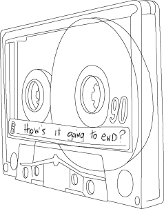
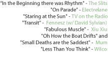
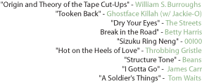

With all things mix-tape related, one never wants his hand to show entirely until the end of side two. Never does anyone make a mix-tape without motive.
There is that nephew that you've decided to take under your musical wing, determined that if you can turn him on to A Tribe Called Quest, KMD and the rest of The Zulu Nation , then he'll gnash his teeth in regret and dump all the Ja Rule tour posters into the donation bin. But you don't want him to know that's what you're doing. With a poorly placed track, the subtlety is broken, and the delicate subversion turns to audio mind control.
The following mix-tape is an internal one, a collection that is begging its own questions: how, when, where will it end? Each song is torn pages from a Choose-Your-Own-Adventure book read straight through. Not making sense always in direct chronology, but after a few songs the series of endless paths to be taken is clear. In some cases, the songs on this tape pose a question of music itself and the implied inquiry of where it is heading, like the selections from The Slits and OOIOO, whereas those by Wilco and Elecrelane ask themselves where it is that the bands themselves are going to end up, both taking large strides from the places that they began. And some songs, you get the feeling that you walked in on a conversation that they are having with themselves, there seems to be no ending and no beginning, such as the case of Fennesz and Beans. Others- Tom Waits, Ghostface Killah, The Streets, Betty Harris- tell such vivid stories that the music is left to the wayside, wondering instead about where the characters in these songs will end up. It is a tape that wonders out loud to itself, concerned for all those songs living within its walls, hoping loudly for the best, unsure how they will all end.
| go to Side A song 1 |